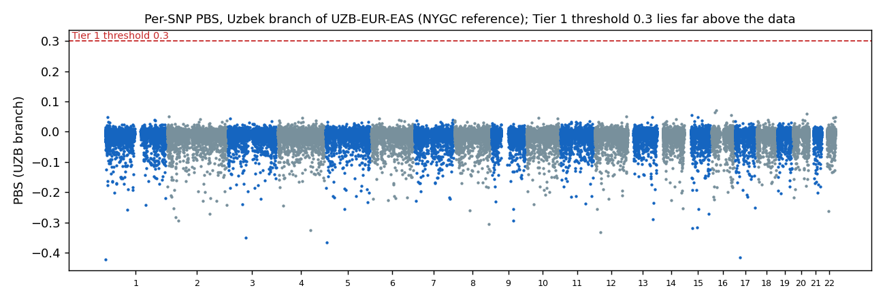

Step 10: Multi-Population PBS Analysis
Population Branch Statistic to identify Uzbek-specific allele frequency shifts
✓ NYGC 30x reference, expanded cohort (1,256 samples) — rebuilt 2026-10-04 ← View original 1,047-sample cohort results (archived, not directly comparable on this page)1. Overview
The Population Branch Statistic (PBS) measures how much allele frequencies have changed along one population’s own branch of a three-population tree. For the Uzbek branch the tree is UZB–EUR–EAS. Each pairwise FST is turned into a branch length T = −ln(1 − FST) and PBSUZB = (TUZB-EUR + TUZB-EAS − TEUR-EAS) / 2. A large value means that the Uzbek frequency has moved away from both outgroups, which is expected under local selection, strong drift, or an allele that arose in the lineage.
Tier definitions (unchanged from the earlier version)
| Tier | Rule | SNPs on NYGC |
|---|---|---|
| 1 | PBSUZB ≥ 0.3 | 0 |
| 2 | smallest allele-frequency difference between UZB and any reference group ≥ 0.3 (ΔAF) | 0 (largest ΔAF in the panel: 0.214) |
| 3 | near-private: Uzbek MAF ≥ 5% and all four references ≤ 1% | 0 |
2. Data and method
- Samples and markers: the same as step 9: UZB 1,256, EUR 633, EAS 585, SAS 601, AFR 893; 82,744 LD-pruned SNPs shared with the NYGC 30x GRCh38 reference, of which 74,171 remain after dropping the 8,573 sites with an overlapping indel, multiallelic or structural-variant record in the NYGC call set (list on DRAGEN:
nygc30x_1256_filt/flagged_overlap.txt). - Frequencies: PLINK 1.9
--freq --keep-allele-orderper group, so the same allele is compared in every population. In the tables the allele shown is the Uzbek minor allele. - FST: per-SNP Weir & Cockerham for UZB–EUR, UZB–EAS and EUR–EAS (
--fst --within); negative values are set to 0 before the transform and FST is capped at 0.999. - PBS and tiers: script
pbs_refqc.py. SAS and AFR are not part of the tree; they enter only the tier 2 and 3 rules. - Run:
/staging/ALSU-analysis/spring2026/full_expanded_cohort/nygc30x_1256_filt/run/on DRAGEN (pbs_all.tsv,pbs_stats.json, per-SNP FST and frequency files); scriptspbs_refqc.py,pbs_refqc_run.shinpbs_refqc_2026-10/and/staging/tmp/scratch/filt.sh.
3. Results

PBS of the Uzbek branch for each SNP. The red line is the Tier 1 threshold (0.3); every SNP lies far below it.
| Statistic | Value |
|---|---|
| SNPs | 74,171 |
| Mean | -0.01015 |
| Median | -0.00589 |
| Standard deviation | 0.0201 |
| 95th / 99th / 99.9th percentile | 0.0047 / 0.0133 / 0.0289 |
| Maximum | 0.06992 |
| SNPs with PBS ≥ 0.02 / 0.03 / 0.05 / 0.07 | 252 / 62 / 7 / 0 |
| SNPs with PBS ≥ 0.1, ≥ 0.15, ≥ 0.3 | 0 / 0 / 0 |
The 15 highest PBSUZB values
| # | SNP (GRCh38) | PBS | UZB | EUR | EAS | SAS | AFR | ΔAF | Gene overlap (Ensembl) |
|---|---|---|---|---|---|---|---|---|---|
| 1 | 16:17179162 | 0.070 | 0.50 | 0.30 | 0.32 | 0.68 | 0.68 | 0.176 | XYLT1 |
| 2 | 16:12785951 | 0.064 | 0.05 | 0.11 | 0.19 | 0.06 | 0.19 | 0.010 | CPPED1 |
| 3 | 20:55769015 | 0.060 | 0.24 | 0.33 | 0.50 | 0.19 | 0.14 | 0.045 | no gene overlap |
| 4 | 16:79713988 | 0.056 | 0.48 | 0.61 | 0.70 | 0.51 | 0.62 | 0.032 | LINC01229, MAFTRR |
| 5 | 15:26369365 | 0.055 | 0.50 | 0.73 | 0.62 | 0.53 | 0.40 | 0.034 | no gene overlap |
| 6 | 2:7161301 | 0.051 | 0.48 | 0.66 | 0.63 | 0.46 | 0.91 | 0.018 | no gene overlap |
| 7 | 12:127315545 | 0.051 | 0.48 | 0.58 | 0.76 | 0.51 | 0.09 | 0.034 | no gene overlap |
| 8 | 15:48955804 | 0.049 | 0.07 | 0.10 | 0.32 | 0.05 | 0.58 | 0.015 | SHC4 |
| 9 | 13:94254283 | 0.048 | 0.45 | 0.54 | 0.71 | 0.48 | 0.74 | 0.030 | GPC6 |
| 10 | 1:10941367 | 0.048 | 0.33 | 0.18 | 0.21 | 0.45 | 0.05 | 0.115 | no gene overlap |
| 11 | 22:50007172 | 0.048 | 0.32 | 0.48 | 0.46 | 0.23 | 0.38 | 0.056 | IL17REL |
| 12 | 10:49549458 | 0.045 | 0.49 | 0.41 | 0.20 | 0.61 | 0.52 | 0.027 | no gene overlap |
| 13 | 4:98750184 | 0.045 | 0.44 | 0.33 | 0.23 | 0.52 | 0.27 | 0.085 | no gene overlap |
| 14 | 22:41812668 | 0.045 | 0.45 | 0.34 | 0.23 | 0.44 | 0.72 | 0.008 | CCDC134 |
| 15 | 10:125576346 | 0.045 | 0.04 | 0.09 | 0.18 | 0.02 | 0.00 | 0.021 | TEX36-AS1 |
None of these is a candidate: the largest frequency difference to any reference group is 0.176. Functional annotation of this list is on step 12.
4. Does the pipeline produce large values when a population is really differentiated?
As a check on dynamic range, PBS was computed for the other two branches of the same tree from the same files. The East Asian branch reaches 0.988 and the European branch 0.660 in this panel, against 0.070 for the Uzbek branch.
| Branch | SNP | PBS | UZB | EUR | EAS | Gene overlap |
|---|---|---|---|---|---|---|
| East Asian branch | 15:48340956 | 0.988 | 0.43 | 0.24 | 1.00 | DUT |
| East Asian branch | 17:19291499 | 0.947 | 0.50 | 0.81 | 0.01 | EPN2 |
| East Asian branch | 1:1395346 | 0.893 | 0.48 | 0.82 | 0.02 | CCNL2 |
| East Asian branch | 5:4938017 | 0.860 | 0.49 | 0.19 | 0.97 | no gene overlap |
| East Asian branch | 4:134216805 | 0.823 | 0.50 | 0.23 | 0.98 | gene without symbol |
| European branch | 1:1395346 | 0.660 | 0.48 | 0.82 | 0.02 | CCNL2 |
| European branch | 17:19291499 | 0.617 | 0.50 | 0.81 | 0.01 | EPN2 |
| European branch | 15:28037595 | 0.593 | 0.49 | 0.85 | 0.12 | OCA2 |
| European branch | 3:71472343 | 0.548 | 0.50 | 0.81 | 0.05 | FOXP1 |
| European branch | 5:4938017 | 0.548 | 0.49 | 0.19 | 0.97 | no gene overlap |
These large values are not selection findings either: they are SNPs on which EUR and EAS have opposite frequencies and Uzbeks sit in between, so both outgroup branches look long (the same SNPs head the FST ranking on step 9). The check shows that the pipeline returns large PBS wherever a lineage-specific frequency difference exists in this panel. It is not a power calculation for selection on the Uzbek lineage, and the statistic by construction cannot flag anything that is simply an intermediate frequency between the two outgroups, which is what admixture produces.
5. How the earlier “candidates” arose, in two stages
| Stage | What happened | Result |
|---|---|---|
| 1. Old reference file (until 2026-10-02) | In ALL.chr*.shapeit2_integrated_v1a.GRCh38 the genotype at a few dozen sites depends on the sequencing batch of the sample, not on population (for example 12:22967890: EUR 97% in that file, about 2.6% in NYGC and in gnomAD). | Fake PBS up to 3.0; Tier 1 lists of 8 (original) and 5 (expanded) SNPs; “chr12 cluster”. |
| 2. First NYGC run (2026-10-02) | Five new PBS peaks appeared. They were artefacts of my own extraction: single-base records were compared at repeat or indel sites where the NYGC call set has overlapping records (for example CA-repeat deletions at 2:30673774, a 12-bp insertion at 22:48293814); the Uzbek array and 1000G phase 3 agree with each other at these sites. | Removed by excluding all 8,573 sites with an overlapping indel, multiallelic or SV record within 1 bp. |
| 3. Current result | All-site check on the filtered panel: the Uzbek frequency lies outside the range spanned by the four reference groups by more than 0.05 at 66 of 74,171 SNPs, by more than 0.08 at 6, by more than 0.10 at 2 (largest margin 0.11), and by more than 0.15 at none. | No Tier 1, 2 or 3 SNP; maximum PBS 0.070. |
6. Limitations
- The panel is an LD-pruned set of about 74,000 array SNPs. It samples the genome sparsely and can miss a selected locus that no panel SNP tags. “No signal in this panel” is not “no selection”.
- PBS with an admixed focal population is hard to interpret: if the Uzbek ancestry is a mixture of the two outgroups, PBSUZB is close to zero or negative almost everywhere (mean -0.010), and the statistic is least sensitive exactly where selection would matter for the admixed gene pool. Methods that model admixture (for example local-ancestry-based tests) were not run.
- Reference individuals were not filtered for relatedness; the effect on per-SNP FST was not tested.
7. Next steps (status)
- Functional annotation of the new top list: done (step 12).
- Selection analysis that models admixture: not done; see the list of open items in next steps.
ARCHIVED, not current: previous version of this page (August 2026, old 1000G reference; “8 / 5 Tier-1 candidates”). Withdrawn; do not cite.
1. Overview
The Population Branch Statistic (PBS) measures allele frequency divergence along a specific population lineage relative to two outgroup populations. By computing PBS for the Uzbek branch of a three-population tree (UZB–EUR–EAS), we identify SNPs where the Uzbek population has experienced unusually large frequency shifts — potential signatures of local adaptation or genetic drift.
Expanded Cohort PBS Results (GRCh38)
| Metric | Expanded Cohort | Original Cohort |
|---|---|---|
| SNPs analyzed | 83,091 | 79,767 |
| Mean PBSUZB | −0.01016 | −0.01001 |
| Median PBSUZB | −0.00605 | −0.00604 |
| Max PBSUZB | 2.7862 | 3.01414 |
| 5 | 8 |
2. Prerequisites
| Source | File(s) | Description |
|---|---|---|
| Merged Dataset | UZB_1kG_merged.{bed,bim,fam} |
3,804 samples × 83,091 LD-pruned SNPs (from Step 8) |
| Population Mapping | clusters_fixed.txt |
Sample-to-superpopulation assignments, corrected (45 unmapped 1000G samples excluded, not defaulted to UZB) |
Population Panel
| Population | Code | N | Source |
|---|---|---|---|
| Uzbek cohort | UZB | 1,256 | ALSU QC-passed set (expanded) |
| European | EUR | 503 | 1000 Genomes Phase 3 |
| East Asian | EAS | 504 | 1000 Genomes Phase 3 |
| South Asian | SAS | 489 | 1000 Genomes Phase 3 |
| African | AFR | 660 | 1000 Genomes Phase 3 |
3. Pipeline
3.1 Build Population Cluster File
Create PLINK cluster assignments from the population mapping and the merged FAM file:
else p="UZB")
silently classified any 1000G sample not found in the population panel as "UZB" — 45 real 1000G
individuals were folded into the Uzbek group this way, inflating it from the correct 1,256 to 1,301.
Root cause: the GRCh38 1000G VCF has 2,548 samples but the classic v3 population panel only documents
2,504. Fixed with an explicit Python membership check (real-UZB-list match → UZB; else panel
match → that population; else → excluded entirely, never defaulted). The code block below is
shown for historical reference (as originally written); the corrected logic was used to build
clusters_fixed.txt, the actual input for the results on this page.
3.2 Extract Per-Population Sample Lists
3.3 Compute Per-Population Allele Frequencies
3.4 Pairwise Per-SNP FST
Compute per-SNP Weir & Cockerham FST for the PBS triangle (UZB–EUR, UZB–EAS, EUR–EAS) plus two additional pairs (UZB–SAS, UZB–AFR) for ΔAF context:
3.5 PBS Calculation (Python)
PBS is derived from pairwise FST values by converting each to a divergence time T = −ln(1 − FST), then computing the branch length for the target (UZB) population:
summary_stats.txt) contains
a stale hardcoded label ("UZB n=1199") left over from before the clusters_fixed.txt bug fix above —
verified by diffing the actual .frq input files it read against the corrected versions
(byte-identical), confirming the computed statistics shown here are correct even though that
one printed label is not. Use the Population Panel table in Section 2 for the real counts (UZB=1,256).
4. Results
4.1 Pairwise FST (Weighted)
| Comparison | Weighted FST | Mean FST |
|---|---|---|
| UZB vs EUR | 0.01498 | 0.01028 |
| UZB vs EAS | 0.03963 | 0.02349 |
| EUR vs EAS | 0.08661 | 0.05086 |
| UZB vs SAS | 0.01445 | 0.00989 |
| UZB vs AFR | 0.12830 | 0.06114 |
4.2 PBS Summary Statistics
| Metric | Value |
|---|---|
| SNPs analyzed | 83,091 |
| Mean PBSUZB | −0.01016 |
| Median PBSUZB | −0.00605 |
| Max | 2.78615 |
| 95th percentile | 0.0048 |
| 99th percentile | 0.0135 |
| 99.9th percentile | 0.0304 |
| PBS ≥ 0.3 (Tier 1) | 5 SNPs |
📊 View Full Tier 1 Candidates Report
4.3 Top PBS Candidates
| # | SNP | Chr | Position | PBSUZB | MAFUZB | MAFEUR | MAFEAS | MAFSAS | MAFAFR |
|---|
5. Output Files
| File | Description |
|---|---|
clusters_fixed.txt | Population cluster file, corrected (FID IID POP) |
freq_{UZB,EUR,EAS,SAS,AFR}_fixed.frq | Per-population allele frequencies |
fst_{POP1}_{POP2}_fixed.fst | Per-SNP pairwise FST (5 pairs) |
pbs_results/pbs_results.tsv | PBS scores for all 83,091 SNPs |
pbs_results/uzbek_specific_snps.tsv | Tier 1 candidate SNPs (5 SNPs) |
pbs_results/summary_stats.txt | Summary statistics (population-count label is stale — see Section 3.5 note; computed stats are correct) |
6. Next Steps
- Step 11: ADMIXTURE — Continental ancestry decomposition using the same merged dataset.
- Step 12: PBS Annotation — Functional annotation of the 8 PBS candidates.
- Step 13: LD Analysis — LD clumping and decay analysis of PBS candidates.